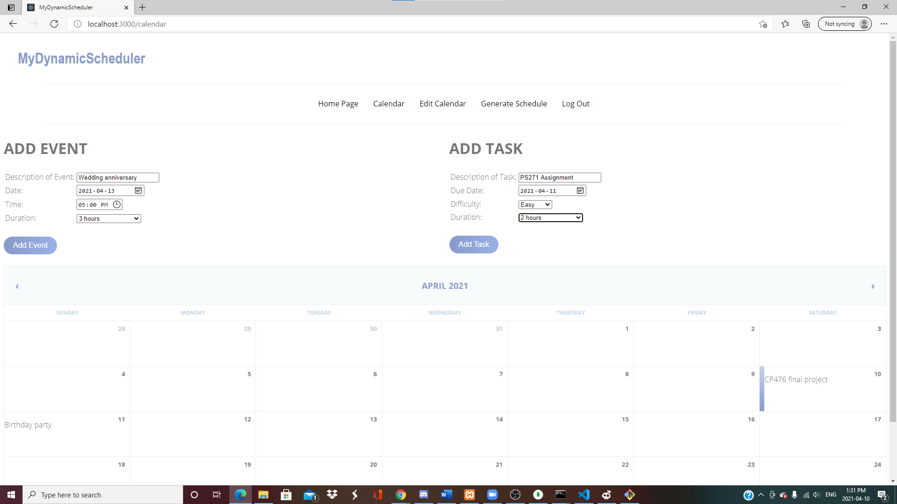

My Dynamic Scheduler
A group academic project built by me and two others (team of three) in April 2021. This was the first full stack MERN application I had ever developed. Uses a ReactJS frontend and a NodeJS backend.
This project was what taught me full stack development. It has a backend for storing users, tasks, and events. The application also uses fairly insecure authentication, with private and public paths for access based on login. This web app allows users to upload tasks and events to their personal calendar and will generate a daily schedule organized by task due date, estimated completion time, and difficulty. Out of the group of three I did the largest contribution, designing and implementing the entire backend, designing and implementing the scheduler algorithm, and using axios to connect the frontend and backend. I also got to practice my code review skills over discord with my other group members for the frontend of the project.
The code for this project can be found on my github or by following this link!
